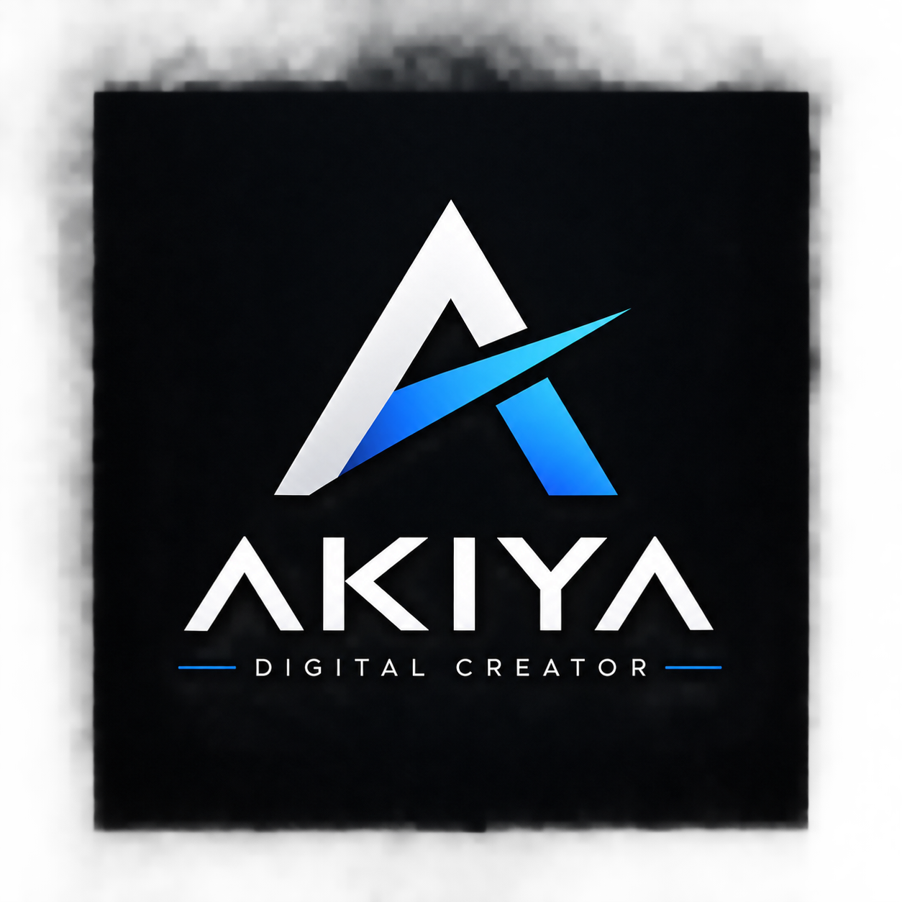
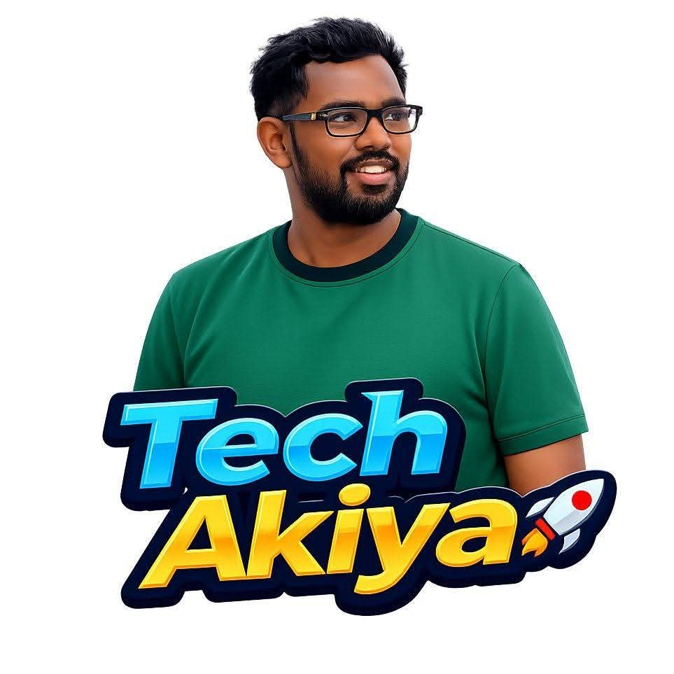
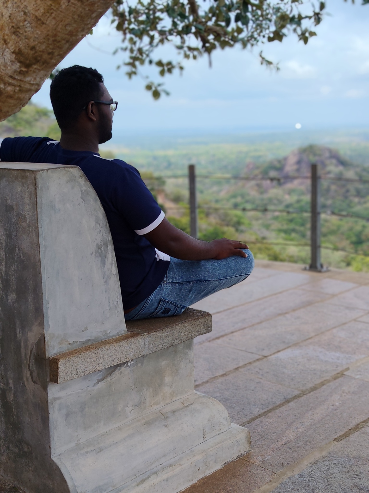

Tech Akiya
My first major long-term project — a technology YouTube channel started on 22 July 2022. The channel has continued for four years, with 107 uploaded videos and 127,490 total views recorded for this portfolio.
Visit Tech Akiya ↗
Let's Work ↗I'm Akila Induranga — creator of Tech Akiya, video editor, digital creator and builder of small ideas, content and projects.
01 — ABOUT
I enjoy creating content, editing videos, working with technology and turning ideas into things people can actually use.
I’m the owner of Tech Akiya, a Sri Lankan technology-focused YouTube channel. Alongside content creation, I’m developing my own business ideas, digital products and creative projects.
My interests move between technology, media, AI, business, design and travel — so this website is my digital home for the work I create along the way.
02 — DIGITAL WORLD
A place to discover the channels, ideas and creative work connected to AKIYA.

Technology, apps, AI, digital tips and practical content for a Sri Lankan audience.
Open YouTube →An evolving online-order assistance concept: customers share a budget and need, and the right product can be sourced and ordered for them.
Project in progressDocumentaries, social-media content, AI videos, visual work and community-focused projects created outside the main channel.
More projects coming03 — SELECTED WORK
My first major long-term project — a technology YouTube channel started on 22 July 2022. The channel has continued for four years, with 107 uploaded videos and 127,490 total views recorded for this portfolio.
Visit Tech Akiya ↗My second major project — creating documentary-style media for a temple construction project. This work is being done voluntarily, with the goal of documenting the journey and helping the project communicate its story online.
Free / Community ProjectAn early-stage concept for helping customers buy online when they know what they need and the budget they have. The idea is being explored further, including the possibility of sourcing products in larger quantities later.
Concept in development04 — SERVICES
If you have a project or business that needs digital content, creative support or practical online work, let's talk.
YouTube videos, reels, social clips and documentary-style edits.
Content ideas, short-form videos, posts and platform-ready creative work.
Thumbnails, posters, social creatives and visual assets.
Content-focused promotion and practical digital marketing support.
AI-assisted video concepts, visuals, prompts and creative production.
Reliable data-entry and general digital assistance for projects.
Digital ads and promotional content for vehicle and land listings.
If it involves content, digital media or a practical creative idea, let's discuss it.
05 — JOURNEY
Started the YouTube journey on 22 July 2022.
Built videos, learned editing, explored technology and developed a creator workflow.
Expanded into documentary work, business ideas, AI content and client services.
Digital products, stronger content, new projects, business development and travel.
06 — CONNECT
One place for my creator channels, professional links and future digital work.
07 — CONTACT
For client work, collaborations, content projects or digital ideas, reach out directly.
